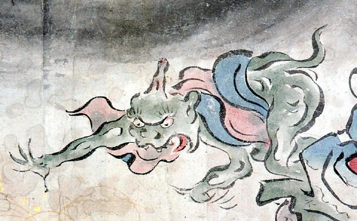

尻尾の生えた一角の化物。緑色の体をしており、赤と青の衣を身にまとっている。大きく口を開き舌を出し、前のめりになって手を突き出している。
著作者：吉光／出典：親書誌：U426_nichibunken_0057：百鬼ノ図；ヒャッキノズ／日付：2006／資源識別子：U426_nichibunken_0057_0006_0004
Copyright (c)2010- International Research Center for Japanese Studies, Kyoto, Japan. All rights reserved.